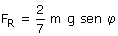
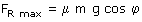
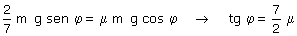

|
b) La fuerza de rozamiento para que la esfera ruede sin deslizar vale:  Entonces al aumentar el ángulo φ tendrá que aumentar la fuerza de rozamiento, pero la fuerza de rozamiento tiene un límite:  Luego la máxima inclinación del plano es aquella para la cual es máxima la fuerza de rozamiento:  Si la inclinación del plano supera este valor la esfera bajará girando pero no acompasadamente, es decir el punto de contacto con el suelo no estará en reposo |